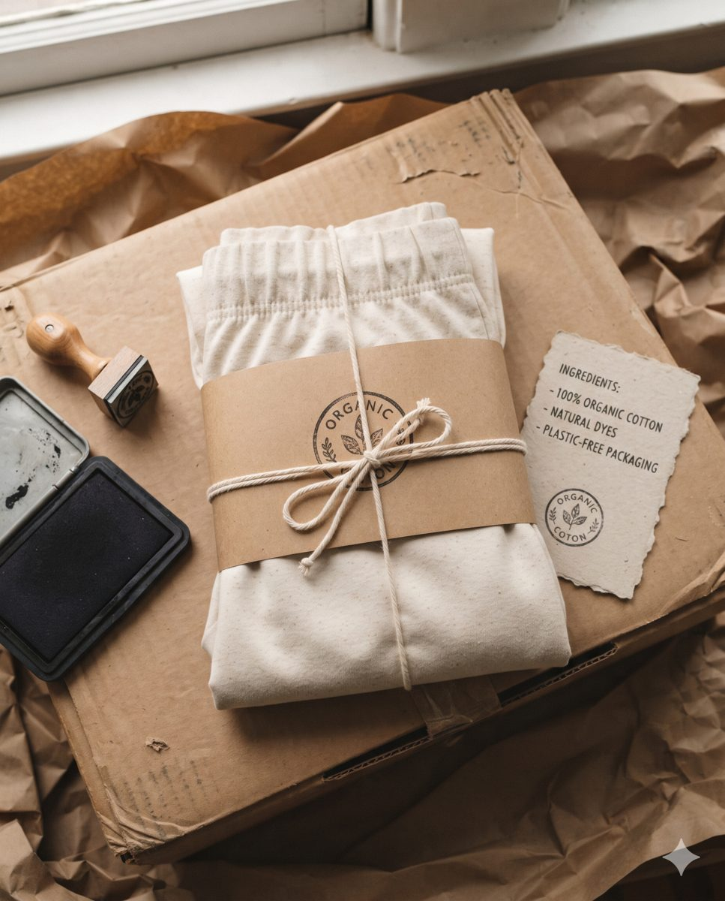
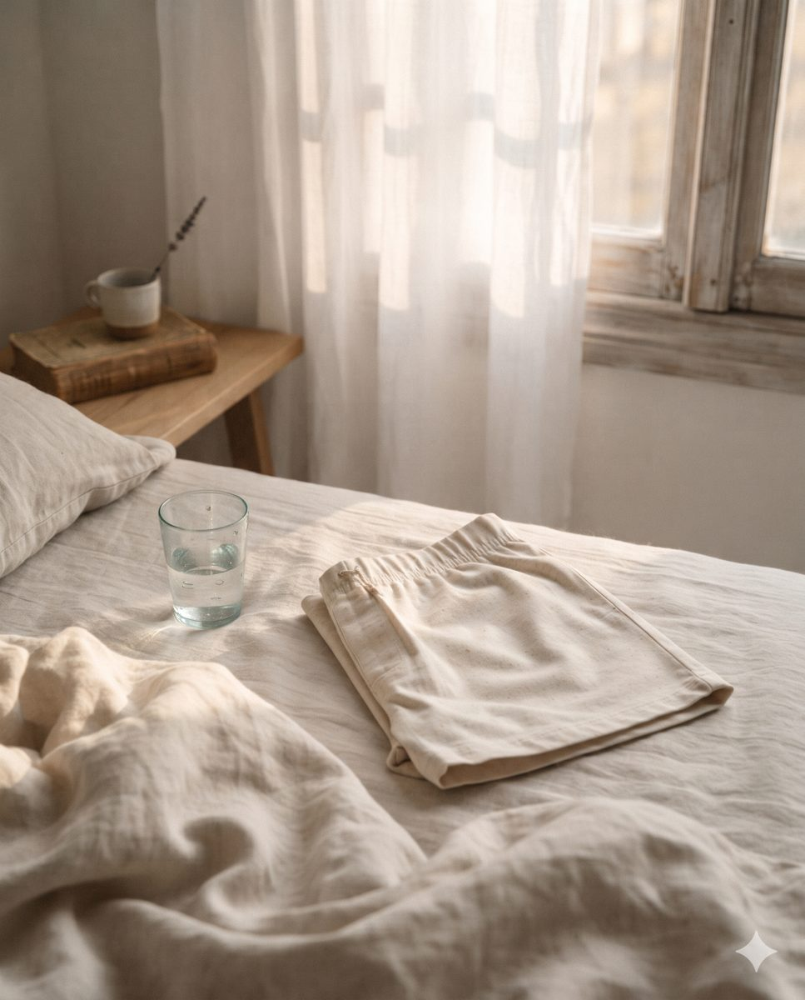
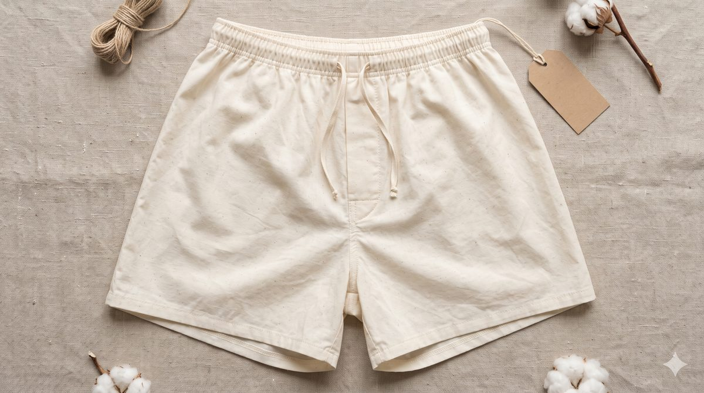
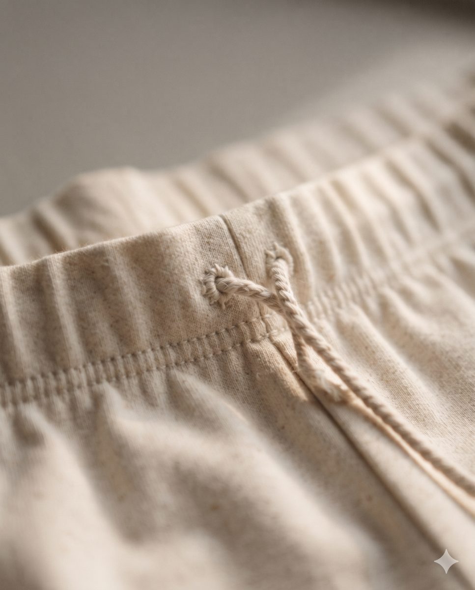

<title>언플라스틱 컴퍼니</title>
<meta name="claude:viewport-fit-sides" content="cover">
<meta name="description" content="몸에 닿는 것부터 플라스틱을 덜어내는 회사. 들어간 소재를 전부 공개합니다.">
<link rel="preconnect" href="https://fonts.googleapis.com">
<link rel="stylesheet" href="https://fonts.googleapis.com/css2?family=Gowun+Batang:wght@400;700&family=Noto+Sans+KR:wght@400;500;700;800&family=Nanum+Gothic+Coding:wght@400;700&display=swap">
<style>
/* Layout: 5개 장(미션 → 문제 → 첫 물건 → 함께하기 → 신청). 장 제목만 큰 글씨, 장 안의 단락은 한 단계 작은 제목. 크래프트지 띠가 장의 시작을 알림. 일러스트는 선이 그려지는 라인 드로잉. */
:root{
  --paper:#F7F3EC; --paper-2:#EDE6DA; --ink:#23201B; --ink-2:#6A6358; --rule:#E2DACC;
  --stamp:#B2392A; --stamp-soft:#F7E4DF; --warn:#B2392A;
  --kraft:#CDAA80; --kraft-deep:#A8835A; --kraft-ink:#221A10; --seal:#A8321F;
  --sky-1:#E9EDF2; --sky-2:#F6F2E6; --sky-3:#F2E4D8; --sky-4:#1C1E2A;
  --sky-ink-1:#16130F; --sky-ink-2:#16130F; --sky-ink-3:#16130F; --sky-ink-4:#ECE9E2;
  --f-display:"Gowun Batang","Nanum Myeongjo","AppleMyungjo","Batang",serif;
  --f-body:"Noto Sans KR","Apple SD Gothic Neo","Malgun Gothic",system-ui,sans-serif;
  --f-mono:"Nanum Gothic Coding","D2Coding",ui-monospace,Menlo,monospace;
}
@media (prefers-color-scheme: dark){:root:not([data-theme="light"]){
  --paper:#131210; --paper-2:#1C1A17; --ink:#EEEAE2; --ink-2:#A8A196; --rule:#2E2A25;
  --stamp:#E57A63; --stamp-soft:#2E1C18; --warn:#E57A63;
  --kraft:#3F3021; --kraft-deep:#5A452E; --kraft-ink:#F2E8D8; --seal:#EE8B72;
  --sky-1:#141820; --sky-2:#1B1915; --sky-3:#211914; --sky-4:#0B0C12;
  --sky-ink-1:#EEEAE2; --sky-ink-2:#EEEAE2; --sky-ink-3:#EEEAE2; --sky-ink-4:#EEEAE2; color-scheme:dark}}
:root[data-theme="dark"]{
  --paper:#131210; --paper-2:#1C1A17; --ink:#EEEAE2; --ink-2:#A8A196; --rule:#2E2A25;
  --stamp:#E57A63; --stamp-soft:#2E1C18; --warn:#E57A63;
  --kraft:#3F3021; --kraft-deep:#5A452E; --kraft-ink:#F2E8D8; --seal:#EE8B72;
  --sky-1:#141820; --sky-2:#1B1915; --sky-3:#211914; --sky-4:#0B0C12;
  --sky-ink-1:#EEEAE2; --sky-ink-2:#EEEAE2; --sky-ink-3:#EEEAE2; --sky-ink-4:#EEEAE2; color-scheme:dark}
*{box-sizing:border-box}
html{scroll-behavior:smooth}
body{background:var(--paper);color:var(--ink);font-family:var(--f-body);font-size:17px;line-height:1.7;word-break:keep-all;overflow-wrap:anywhere;-webkit-font-smoothing:antialiased}
body::before{content:"";position:fixed;inset:0 0 auto;height:env(safe-area-inset-top,0px);z-index:30;background:var(--paper)}
.wrap{max-width:1120px;margin:0 auto;padding-left:max(20px,env(safe-area-inset-left,0px));padding-right:max(20px,env(safe-area-inset-right,0px))}
a{color:inherit}
:focus-visible{outline:2px solid var(--stamp);outline-offset:3px}
p{margin:0}
h1,h2,h3,h4{margin:0;text-wrap:balance;letter-spacing:-.02em}
h1,h2,h3{font-family:var(--f-display);font-weight:700}
.mono{font-family:var(--f-mono);font-variant-numeric:tabular-nums}

/* --- type hierarchy: 장 제목(h2) > 단락 제목(h3) > 항목 제목(h4) --- */
.ch-label{display:flex;align-items:center;gap:10px;font-size:14px;font-weight:800;color:var(--ink-2);letter-spacing:-.01em}
.ch-label .no{font-family:var(--f-mono);font-weight:500;font-size:13px;padding:2px 8px;border:1.5px solid currentColor;border-radius:999px}
h2{font-size:clamp(34px,5.4vw,64px);line-height:1.22;letter-spacing:-.03em}
h3{font-size:clamp(25px,3.1vw,36px);line-height:1.3;letter-spacing:-.025em}
h4{font-size:19px;line-height:1.4;font-weight:800;letter-spacing:-.02em}
.sub-label{font-size:13.5px;font-weight:800;color:var(--ink-2)}
.lede{font-size:clamp(18px,1.9vw,20px);line-height:1.65;color:var(--ink-2);max-width:34em}
.head{display:flex;flex-direction:column;gap:18px;max-width:820px}
.wrap.head{max-width:1120px}
.wrap.head>*{max-width:820px}
.subhead{display:flex;flex-direction:column;gap:12px;max-width:720px}
.chapter{padding-block:clamp(88px,11vw,140px)}
.block{padding-block:clamp(56px,8vw,96px)}
.block+.block{border-top:1px solid var(--rule)}
.band{background:var(--paper-2)}

/* kraft */
.kraft{background-color:var(--kraft);color:var(--kraft-ink);position:relative;isolation:isolate}
.kraft::before{content:"";position:absolute;inset:0;z-index:-1;opacity:.2;mix-blend-mode:multiply;pointer-events:none;
  background-image:url("data:image/svg+xml,%3Csvg xmlns='http://www.w3.org/2000/svg' width='240' height='240'%3E%3Cfilter id='f'%3E%3CfeTurbulence type='fractalNoise' baseFrequency='.75' numOctaves='3' seed='4'/%3E%3CfeColorMatrix values='0 0 0 0 .35 0 0 0 0 .24 0 0 0 0 .12 0 0 0 .55 0'/%3E%3C/filter%3E%3Crect width='240' height='240' filter='url(%23f)'/%3E%3C/svg%3E")}
.kraft .ch-label,.kraft .lede,.kraft .sub-label{color:inherit}
.kraft .lede{opacity:.82}
.kraft .btn{background:var(--kraft-ink);color:var(--kraft)}
.kraft .btn.text{background:none;color:var(--kraft-ink)}

/* nav */
header.nav{position:sticky;top:env(safe-area-inset-top,0px);z-index:20;background:color-mix(in srgb,var(--paper) 88%,transparent);backdrop-filter:saturate(1.3) blur(14px);-webkit-backdrop-filter:saturate(1.3) blur(14px);border-bottom:1px solid var(--rule)}
header.nav .wrap{display:flex;align-items:center;justify-content:space-between;gap:12px;height:52px}
.logo{display:flex;align-items:center;gap:9px;font-weight:800;font-size:15.5px;letter-spacing:-.02em;text-decoration:none}
.logo svg{width:22px;height:22px}
.nav-links{display:flex;gap:20px;align-items:center;font-size:14px}
.nav-links a{text-decoration:none;color:var(--ink-2)}
.nav-links a:hover,.nav-links a.cur{color:var(--ink)}
.nav-links a.btn{color:var(--paper)}
@media (max-width:760px){.nav-links .hide-s{display:none}}
.btn{display:inline-flex;align-items:center;justify-content:center;gap:8px;font:inherit;font-weight:700;font-size:16px;border:0;border-radius:999px;padding:13px 24px;background:var(--ink);color:var(--paper);cursor:pointer;text-decoration:none}
.btn.small{padding:6px 14px;font-size:13.5px}
.btn.text{background:none;color:var(--ink);padding:13px 4px}
.btn.text::after{content:"›";font-size:20px;line-height:1}
.prog{position:absolute;left:0;bottom:-1px;height:2px;background:var(--kraft-deep);width:0}

/* hero */
.hero{padding-block:clamp(64px,10vw,128px) clamp(56px,8vw,96px)}
.hero-grid{display:grid;grid-template-columns:minmax(0,1.45fr) minmax(0,1fr);gap:clamp(24px,5vw,64px);align-items:center}
.hero h1{font-size:clamp(42px,7vw,92px);line-height:1.16;letter-spacing:-.04em}
.hero h1 span{background:linear-gradient(transparent 62%,color-mix(in srgb,var(--kraft) 70%,transparent) 62% 92%,transparent 92%)}
.hero-shot{margin:0;display:flex;flex-direction:column;gap:10px;min-width:0}
.hero-shot img{width:100%;max-width:100%;height:auto;aspect-ratio:4/5;object-fit:cover;border-radius:16px;display:block;box-shadow:0 30px 60px -36px rgba(40,25,10,.45)}
.hero-shot figcaption,.shots figcaption{font-size:12.5px;color:var(--ink-2)}
.hero .cta{display:flex;flex-wrap:wrap;gap:6px 18px;align-items:center}
.seal{color:var(--seal);width:100%;max-width:380px;height:auto;transform:rotate(-7deg);justify-self:center}
.seal text{fill:currentColor;font-family:var(--f-display)}
@media (max-width:820px){.hero-grid{grid-template-columns:1fr}.seal{max-width:220px;justify-self:start}}

/* mission */
.axes{display:grid;grid-template-columns:repeat(2,minmax(0,1fr));gap:20px;margin-top:clamp(40px,6vw,64px)}
.axes article{border-top:2px solid var(--ink);padding-top:20px;display:flex;flex-direction:column;gap:10px;min-width:0}
.axes .k{font-size:14px;font-weight:800;color:var(--stamp)}
.axes p{color:var(--ink-2);font-size:16.5px}
.founder{margin-top:clamp(48px,7vw,80px);display:grid;grid-template-columns:auto minmax(0,1fr);gap:18px;align-items:start;max-width:820px}
.founder svg{width:48px;height:48px;color:var(--stamp)}
.founder blockquote{margin:0;font-family:var(--f-display);font-size:clamp(21px,2.4vw,27px);line-height:1.6;font-weight:700;letter-spacing:-.02em}
.founder cite{display:block;margin-top:10px;font-style:normal;font-size:14px;color:var(--ink-2);font-weight:500}
@media (max-width:700px){.axes{grid-template-columns:1fr}.founder{grid-template-columns:1fr}}

/* ===== line drawing ===== */
.ill{width:100%;height:auto;overflow:visible;color:var(--ink)}
.ill .d{fill:none;stroke:currentColor;stroke-width:2;stroke-linecap:round;stroke-linejoin:round}
.ill .hot{stroke:var(--stamp);stroke-width:2.6}
.ill .fill{fill:var(--stamp-soft);stroke:none}
.ill .dash{stroke-dasharray:3 4}
@media (prefers-reduced-motion:no-preference){
  .draw .d{stroke-dasharray:1;stroke-dashoffset:0;transition:stroke-dashoffset 1.4s cubic-bezier(.4,.1,.2,1)}
  .draw .d.dash{stroke-dasharray:none}
  .draw .hot{transition-delay:.45s}
  .draw.pre .d:not(.dash){stroke-dashoffset:1}
  .draw .fill{transition:opacity .6s .9s}
  .draw.pre .fill{opacity:0}
}

/* ===== day ===== */
.day{background:var(--sky,var(--sky-1));color:var(--sky-ink,var(--sky-ink-1));transition:background-color .8s ease,color .8s ease}
.day[data-phase="1"]{--sky:var(--sky-1);--sky-ink:var(--sky-ink-1)}
.day[data-phase="2"]{--sky:var(--sky-2);--sky-ink:var(--sky-ink-2)}
.day[data-phase="3"]{--sky:var(--sky-3);--sky-ink:var(--sky-ink-3)}
.day[data-phase="4"]{--sky:var(--sky-4);--sky-ink:var(--sky-ink-4)}
.day .ch-label,.day .lede{color:inherit}
.day .lede{opacity:.75}
.day-top{padding-block:clamp(88px,11vw,140px) 8px}
.day-grid{display:grid;grid-template-columns:minmax(0,.9fr) minmax(0,1.1fr);gap:clamp(24px,5vw,72px)}
.stage{position:sticky;top:calc(52px + env(safe-area-inset-top,0px));height:calc(100vh - 52px);max-height:760px;display:flex;align-items:center;justify-content:center}
.dial{width:min(380px,100%);height:auto;overflow:visible}
.dial .ring{fill:none;stroke:currentColor;stroke-opacity:.16;stroke-width:2}
.dial .tick{stroke:currentColor;stroke-opacity:.3;stroke-width:1.5}
.dial .tick.h{stroke-opacity:.6;stroke-width:2}
.dial .hl{font-family:var(--f-mono);font-size:12px;fill:currentColor;opacity:.55}
.dial .arc{fill:none;stroke:var(--stamp);stroke-width:4;stroke-linecap:round}
.dial .ev{fill:var(--sky,var(--sky-1));stroke:currentColor;stroke-opacity:.45;stroke-width:1.5;transition:fill .3s}
.dial .ev.on{fill:var(--stamp);stroke:var(--stamp);stroke-opacity:1}
.dial .hand{stroke:currentColor;stroke-width:2;stroke-linecap:round}
.dial .clock{font-family:var(--f-mono);font-size:38px;font-weight:700;fill:currentColor}
.dial .cnt{font-size:14px;fill:currentColor;opacity:.62;font-weight:700}
.steps{list-style:none;margin:0;padding:0 0 10vh}
.steps li{min-height:min(52vh,500px);display:flex;flex-direction:column;justify-content:center;gap:10px;padding-block:28px}
.steps .ill{max-width:260px;margin-bottom:6px;color:inherit}
.steps .t{font-family:var(--f-mono);font-size:14.5px;opacity:.62}
.steps h4{font-family:var(--f-display);font-weight:700;font-size:clamp(24px,2.8vw,32px);letter-spacing:-.03em}
.steps p{font-size:17px;opacity:.78;max-width:28em}
.steps .chem{display:inline-flex;align-self:flex-start;font-size:13px;font-weight:700;padding:4px 11px;border-radius:999px;border:1.5px solid currentColor;opacity:.75}
.day-end{padding-block:6vh clamp(88px,11vw,140px);display:flex;flex-direction:column;gap:18px}
.day-end h3 span{display:block;opacity:.5}
@media (max-width:820px){
  .day-grid{grid-template-columns:1fr}
  .stage{height:auto;max-height:none;padding-block:10px;background:var(--sky,var(--sky-1));z-index:2;transition:background-color .8s}
  .dial{width:150px}
  .steps li{min-height:auto;padding-block:40px}
  .steps .ill{max-width:200px}
}

/* principles */
.prin{display:grid;grid-template-columns:repeat(3,minmax(0,1fr));gap:16px;margin-top:40px}
.prin article{background:var(--paper);border-radius:18px;padding:26px 24px 28px;display:flex;flex-direction:column;gap:10px;min-width:0;color:var(--ink)}
.prin .k{font-size:13.5px;font-weight:800;color:var(--stamp)}
.prin p{color:var(--ink-2);font-size:15.5px}
@media (max-width:820px){.prin{grid-template-columns:1fr}}

/* ===== product ===== */
.p-specs{display:flex;flex-wrap:wrap;gap:8px}
.p-specs span{font-size:14px;font-weight:700;padding:6px 13px;border-radius:999px;background:var(--paper-2)}
.evid{display:grid;grid-template-columns:repeat(2,minmax(0,1fr));gap:16px;margin-top:40px}
.evid article{background:var(--paper-2);border-radius:18px;padding:26px 26px 24px;display:flex;flex-direction:column;gap:10px;min-width:0}
.evid .big{font-family:var(--f-mono);font-size:clamp(40px,5vw,58px);line-height:1;letter-spacing:-.04em;color:var(--stamp);font-weight:500}
.evid p{color:var(--ink-2);font-size:15.5px}
.evid .src{font-size:12.5px;color:var(--ink-2);border-top:1px solid var(--rule);padding-top:10px;margin-top:auto;display:flex;justify-content:space-between;gap:10px;flex-wrap:wrap}
.lvl{display:inline-flex;align-items:center;gap:6px;font-size:12px;font-weight:800;white-space:nowrap}
.lvl i{display:inline-flex;gap:2px}.lvl i b{width:7px;height:7px;border-radius:2px;background:var(--rule)}
.lvl[data-l="3"] i b,.lvl[data-l="2"] i b:nth-child(-n+2),.lvl[data-l="1"] i b:first-child{background:var(--stamp)}
@media (max-width:760px){.evid{grid-template-columns:1fr}}
.caveat{margin-top:20px;font-size:14.5px;color:var(--ink-2);padding:14px 16px;border-left:3px solid var(--stamp);background:var(--stamp-soft);border-radius:0 8px 8px 0;max-width:760px}
.why{display:grid;grid-template-columns:minmax(0,1fr) minmax(0,1fr);gap:clamp(24px,5vw,64px);align-items:center;margin-top:40px}
.chain{list-style:none;margin:0;padding:0;display:flex;flex-direction:column}
.chain li{display:grid;grid-template-columns:36px minmax(0,1fr);gap:4px 14px;padding:18px 0;border-top:1px solid var(--rule)}
.chain li:first-child{border-top:0}
.chain .n{grid-row:span 3;font-family:var(--f-mono);font-size:14px;color:var(--stamp);padding-top:3px}
.chain p{color:var(--ink-2);font-size:15.5px}
.chain .lvl{margin-top:4px}
.compare-ill{display:grid;grid-template-columns:1fr 1fr;gap:16px}
.compare-ill figure{margin:0;display:flex;flex-direction:column;gap:8px;align-items:center;text-align:center}
.compare-ill figcaption{font-size:14px;color:var(--ink-2)}
.compare-ill figcaption b{display:block;color:var(--ink);font-size:16px}
@media (max-width:820px){.why{grid-template-columns:1fr}}
.anatomy{display:grid;grid-template-columns:minmax(0,1.05fr) minmax(0,1fr);gap:clamp(24px,5vw,72px);margin-top:24px}
.a-stage{position:sticky;top:calc(52px + env(safe-area-inset-top,0px));height:calc(100vh - 52px);max-height:720px;display:flex;align-items:center;justify-content:center}
.garment{width:100%;max-width:500px;height:auto;overflow:visible}
.garment .body{fill:var(--paper-2);stroke:var(--ink);stroke-width:1.6;stroke-linejoin:round}
.garment .ln{fill:none;stroke:var(--ink);stroke-width:1.3}
.garment .st{fill:none;stroke:var(--ink-2);stroke-width:1;stroke-dasharray:4 3}
.garment .zone{fill:var(--kraft-deep);opacity:0;transition:opacity .35s}
.garment .zone.on{opacity:.55}
.garment .dot circle{fill:var(--paper);stroke:var(--ink-2);stroke-width:1.5;transition:all .3s}
.garment .dot text{font-family:var(--f-mono);font-size:12px;fill:var(--ink-2);text-anchor:middle;dominant-baseline:central}
.garment .dot.on circle{fill:var(--stamp);stroke:var(--stamp);r:15}
.garment .dot.on text{fill:var(--paper)}
.parts{list-style:none;margin:0;padding:0 0 8vh}
.parts li{min-height:min(58vh,520px);display:flex;flex-direction:column;justify-content:center;gap:8px;padding-block:20px;opacity:.35;transition:opacity .35s;cursor:pointer}
.parts li.on{opacity:1}
.parts .n{font-family:var(--f-mono);font-size:13.5px;color:var(--stamp)}
.parts p{font-size:16.5px;color:var(--ink-2);max-width:28em}
@media (max-width:820px){.anatomy{grid-template-columns:1fr}.a-stage{height:auto;max-height:none;padding-block:10px;background:var(--paper);z-index:2}.garment{max-width:240px}.parts li{min-height:auto;padding-block:28px}}
.compare{display:grid;grid-template-columns:minmax(0,1fr) minmax(0,1fr);gap:clamp(24px,5vw,72px);align-items:center}
.switch{display:inline-flex;background:var(--paper);border-radius:999px;padding:4px;gap:2px;align-self:flex-start}
.switch button{font:inherit;font-size:14.5px;font-weight:700;border:0;border-radius:999px;padding:8px 16px;background:transparent;color:var(--ink-2);cursor:pointer}
.switch button[aria-pressed="true"]{background:var(--ink);color:var(--paper)}
.receipt{background:var(--paper);font-family:var(--f-mono);font-size:13.5px;line-height:1.55;padding:30px 28px 34px;max-width:440px;width:100%;justify-self:center;box-shadow:0 1px 0 var(--rule),0 24px 48px -28px rgba(0,0,0,.28);
  -webkit-mask:linear-gradient(#000 0 0) top/100% calc(100% - 10px) no-repeat,radial-gradient(circle 6px at 50% 100%,transparent 5.5px,#000 6px) bottom/14px 10px repeat-x;
          mask:linear-gradient(#000 0 0) top/100% calc(100% - 10px) no-repeat,radial-gradient(circle 6px at 50% 100%,transparent 5.5px,#000 6px) bottom/14px 10px repeat-x}
.receipt .hd{text-align:center;padding-bottom:16px;border-bottom:1px dashed var(--ink-2);display:flex;flex-direction:column;gap:2px}
.receipt .hd b{font-size:16px;letter-spacing:.14em;font-weight:500}
.receipt .hd span{font-size:12px;color:var(--ink-2)}
.receipt dl{margin:0;display:grid;grid-template-columns:auto minmax(0,1fr);gap:0 16px}
.receipt dt,.receipt dd{margin:0;padding:10px 0;border-bottom:1px dotted var(--rule)}
.receipt dt{color:var(--ink-2)}
.receipt dd{text-align:right}
.receipt dd small{display:block;font-size:11.5px;color:var(--ink-2)}
.receipt .tot{display:flex;justify-content:space-between;align-items:center;padding-top:16px;font-size:15px}
.receipt .tot b{font-size:22px;font-weight:500;color:var(--stamp)}
.receipt.typical .tot b{color:var(--warn)}
.receipt .ft{margin-top:12px;font-size:11.5px;color:var(--ink-2);text-align:center}
.receipt dl,.receipt .tot{transition:opacity .22s}
.receipt.swap dl,.receipt.swap .tot{opacity:.1}
@media (max-width:820px){.compare{grid-template-columns:1fr}}
.trio{display:grid;grid-template-columns:repeat(3,minmax(0,1fr));gap:20px;margin-top:32px}
.trio article{border-top:2px solid var(--ink);padding-top:18px;display:flex;flex-direction:column;gap:8px;min-width:0}
.trio p{color:var(--ink-2);font-size:15.5px}
@media (max-width:820px){.trio{grid-template-columns:1fr;gap:28px}}
.box{display:grid;grid-template-columns:repeat(4,minmax(0,1fr));gap:14px;margin-top:32px}
.box figure{margin:0;background:var(--paper-2);border-radius:18px;padding:22px 20px;display:flex;flex-direction:column;gap:12px;min-width:0}
.box .ill{max-width:120px}
.box figcaption{display:flex;flex-direction:column;gap:2px}
.box figcaption span{font-size:14.5px;color:var(--ink-2)}
@media (max-width:820px){.box{grid-template-columns:1fr 1fr}}
.log{list-style:none;margin:40px 0 0;padding:0;display:grid;grid-template-columns:repeat(4,minmax(0,1fr));gap:16px;position:relative;--fill:37%}
.log::before,.log::after{content:"";position:absolute;top:13px;left:13px;height:2px;border-radius:2px}
.log::before{right:13px;background:var(--rule)}
.log::after{width:var(--fill);background:var(--kraft-deep)}
.log li{position:relative;padding-top:44px;display:flex;min-width:0}
.log .node{position:absolute;top:0;left:0;width:28px;height:28px;border-radius:50%;display:grid;place-items:center;background:var(--paper);border:2px solid var(--rule);z-index:1}
.log .card{flex:1;border-radius:16px;padding:20px 18px 22px;display:flex;flex-direction:column;gap:8px;min-width:0;border:1.5px dashed var(--rule)}
.log .top{display:flex;justify-content:space-between;align-items:center;gap:8px}
.log .m{font-family:var(--f-mono);font-size:13px;color:var(--ink-2)}
.log .chip{font-size:12px;font-weight:800;padding:2px 9px;border-radius:999px;background:var(--paper-2);color:var(--ink-2);white-space:nowrap}
.log h4{font-family:var(--f-display);font-size:21px}
.log p{font-size:14.5px;color:var(--ink-2)}
.log ul{margin:4px 0 0;padding:0;list-style:none;display:flex;flex-direction:column;gap:5px;font-size:14px;color:var(--ink-2)}
.log ul li{padding:0 0 0 16px;display:block;position:relative}
.log ul li::before{content:"";position:absolute;left:0;top:.62em;width:6px;height:6px;border-radius:50%;background:var(--rule)}
.log .is-done .node{background:var(--kraft-deep);border-color:var(--kraft-deep);color:var(--paper)}
.log .is-done .card{border:0;background:var(--paper-2)}
.log .is-done .chip{background:var(--kraft-deep);color:var(--paper)}
.log .is-done ul li::before{background:var(--kraft-deep)}
.log .is-now .node{border-color:var(--kraft-deep);background:var(--paper)}
.log .is-now .node::after{content:"";width:10px;height:10px;border-radius:50%;background:var(--kraft-deep)}
.log .is-now .card{border:1.5px solid var(--kraft-deep);background:var(--paper);box-shadow:0 18px 36px -26px rgba(60,40,15,.5)}
.log .is-now .chip{background:var(--stamp-soft);color:var(--stamp)}
@media (prefers-reduced-motion:no-preference){.log .is-now .node{animation:pulse 2.4s ease-out infinite}}
@keyframes pulse{0%{box-shadow:0 0 0 0 color-mix(in srgb,var(--kraft-deep) 45%,transparent)}70%{box-shadow:0 0 0 12px transparent}100%{box-shadow:0 0 0 0 transparent}}
.log-foot{margin-top:18px;font-size:14px;color:var(--ink-2)}
@media (max-width:820px){.log{grid-template-columns:1fr;gap:14px}.log::before{top:13px;bottom:13px;left:13px;right:auto;width:2px;height:auto}.log::after{top:13px;left:13px;width:2px;height:var(--fill-v,30%)}.log li{padding:0 0 0 44px}}


/* ===== story: 문제 → 답 ===== */
.story{position:relative;margin-top:clamp(40px,6vw,72px)}
.story-stage{position:sticky;top:calc(52px + env(safe-area-inset-top,0px));height:calc(100vh - 52px);min-height:520px;display:flex;flex-direction:column;justify-content:center;background:var(--paper);z-index:1}
.story-grid{display:grid;grid-template-columns:minmax(0,1fr) minmax(0,1fr);gap:clamp(24px,5vw,72px);align-items:center;width:100%}
.story-track{margin-top:calc(-100vh + 52px)}
.story-track div{height:62vh}
.beats{display:grid}
.beat{grid-area:1/1;opacity:0;transform:translateY(14px);transition:opacity .5s,transform .6s cubic-bezier(.2,.7,.2,1);pointer-events:none}
.beat.on{opacity:1;transform:none;pointer-events:auto}
.st-tag{display:inline-block;font-size:13px;font-weight:800;color:var(--paper);background:var(--ink);padding:3px 10px;border-radius:4px;margin-bottom:18px}
.st-tag.ans{background:var(--kraft-deep);color:var(--kraft-ink);margin:14px 0 10px}
.st-num{display:block;font-family:var(--f-display);font-weight:700;font-size:clamp(72px,11vw,148px);line-height:1;letter-spacing:-.04em;color:var(--ink)}
.st-num small{font-size:.4em;margin-left:4px;color:var(--ink-2)}
.st-line{font-family:var(--f-display);font-weight:700;font-size:clamp(21px,2.4vw,28px);line-height:1.5;margin-top:18px;max-width:20em}
.st-src{display:block;margin-top:14px;font-size:13px;color:var(--ink-2)}
.st-a{display:flex;flex-direction:column;align-items:flex-start;min-width:0}
.shots{width:100%;max-width:420px;display:flex;flex-direction:column;gap:8px}
.shot-box{position:relative;aspect-ratio:4/5;max-width:100%;border-radius:16px;overflow:hidden;background:var(--paper-2)}
.shot-box img{position:absolute;inset:0;width:100%;height:100%;object-fit:cover;opacity:0;transform:scale(1.04);transition:opacity .7s ease,transform 1.2s ease}
.shot-box img.on{opacity:1;transform:scale(1)}
.shot-box img.zoom{object-position:30% 40%;transform:scale(1.9)}
.shot-box img.zoom.on{transform:scale(1.7)}
.st-ans{font-family:var(--f-display);font-weight:700;font-size:clamp(20px,2.2vw,26px);line-height:1.5;color:var(--ink);max-width:18em}
.garment .tagcard rect{fill:var(--paper);stroke:var(--stamp);stroke-width:2}
.garment .tagcard circle{fill:none;stroke:var(--stamp);stroke-width:1.5}
.garment .tagcard path{stroke:var(--stamp);stroke-width:1.5;fill:none}
.garment .tagcard{opacity:0;transform:translate(10px,10px);transition:opacity .5s,transform .5s}
.garment .tagcard.on{opacity:1;transform:none}
.st-dots{list-style:none;display:flex;gap:8px;padding:0;margin:28px 0 0;justify-content:center}
.st-dots li{width:28px;height:3px;border-radius:2px;background:var(--rule);transition:background .3s}
.st-dots li.on{background:var(--stamp)}
@media (max-width:820px){
  .story-grid{grid-template-columns:1fr;gap:6px}
  .st-num{font-size:64px}.st-line{font-size:19px;margin-top:10px}.st-tag{margin-bottom:10px}
  .shots{max-width:190px}.st-a{align-items:flex-start}
  .st-ans{font-size:18px}
  .story-stage{min-height:0}
}
.honest{padding-block:clamp(72px,10vw,120px);display:flex;flex-direction:column;gap:20px;align-items:center;text-align:center}
.honest-q{font-family:var(--f-display);font-weight:700;font-size:clamp(28px,4vw,46px);line-height:1.35}
.honest-a{font-family:var(--f-display);font-weight:400;font-size:clamp(19px,2.1vw,23px);line-height:1.7;color:var(--ink-2);max-width:30em}
/* trade-offs as kraft hang tags */
.trio.tags article{border-top:0;background:var(--kraft);color:var(--kraft-ink);border-radius:6px 6px 14px 14px;padding:38px 24px 26px;position:relative;clip-path:polygon(14% 0,86% 0,100% 9%,100% 100%,0 100%,0 9%)}
.trio.tags article::before{content:"";position:absolute;top:14px;left:50%;width:12px;height:12px;margin-left:-6px;border-radius:50%;background:var(--paper)}
.trio.tags .sub-label{color:inherit;opacity:.75}
.trio.tags h4{font-family:var(--f-display);font-size:22px}
.trio.tags p{color:inherit;opacity:.85}
.trio.tags article:nth-child(2){transform:rotate(1.2deg)}.trio.tags article:nth-child(1){transform:rotate(-1deg)}


/* ===== v8 ===== */
.foot{background:#1F1C17;color:#CFC8BC;padding-block:72px 48px;border-top:0;font-size:14px}
.foot a{color:#F5F1EA;text-decoration:none}.foot a:hover{color:#E2C9A4}
.foot-top{display:grid;grid-template-columns:minmax(0,1.6fr) repeat(3,minmax(0,1fr));gap:32px;padding-bottom:40px;border-bottom:1px solid #3A352D}
.foot-brand{display:flex;flex-direction:column;gap:12px;align-items:flex-start}
.foot-brand b{font-size:20px;color:#F5F1EA}
.foot-brand p{font-family:var(--f-display);font-size:17px;line-height:1.6;color:#E8E1D4}
.foot-brand .btn{background:#F5F1EA;color:#1F1C17}
.foot-col{display:flex;flex-direction:column;gap:8px}
.foot-col>span:first-child{font-weight:800;color:#C7A47B;font-size:13px;margin-bottom:4px}
.foot-col .muted-s{color:#8C8578}
.foot-src{padding-block:28px;border-bottom:1px solid #3A352D}
.foot-src b{color:#F5F1EA}
.foot-src ol{margin:8px 0 0;padding-left:18px;display:flex;flex-direction:column;gap:2px;font-size:13px}
.foot-legal{padding-top:24px;display:flex;justify-content:space-between;flex-wrap:wrap;gap:10px;font-size:12.5px;color:#8C8578}
@media (max-width:820px){.foot-top{grid-template-columns:1fr 1fr}.foot-brand{grid-column:1/-1}}
.hero2{display:grid;grid-template-columns:minmax(0,1.1fr) minmax(0,1fr);min-height:min(90vh,820px)}
.hero2 .txt{display:flex;flex-direction:column;justify-content:center;gap:26px;min-width:0;padding-block:clamp(64px,9vw,120px);padding-left:max(20px,calc((100vw - 1120px)/2 + 20px));padding-right:clamp(24px,4vw,56px)}
.hero2 h1{font-size:clamp(44px,6.6vw,92px);line-height:1.14;letter-spacing:-.04em}
.hero2 h1 span{background:linear-gradient(transparent 62%,color-mix(in srgb,var(--kraft) 70%,transparent) 62% 92%,transparent 92%)}
.hero2 .cta{display:flex;flex-wrap:wrap;gap:6px 18px;align-items:center}
.hero2 .ph{margin:0;position:relative;min-height:420px;background:var(--kraft)}
.hero2 .ph img{position:absolute;inset:0;width:100%;height:100%;object-fit:cover}
.hero2 .ph figcaption,.opener small,.choose-ph figcaption{position:absolute;left:16px;bottom:14px;font-size:12px;color:#F5F1EA;background:rgba(31,28,23,.55);padding:3px 9px;border-radius:4px}
@media (max-width:820px){.hero2{grid-template-columns:1fr}.hero2 .ph{min-height:380px}}
.opener{position:relative;min-height:min(86vh,780px);display:flex;align-items:flex-end;background:#2A241C;color:#F5F1EA;isolation:isolate}
.opener>img{position:absolute;inset:0;width:100%;height:100%;object-fit:cover;z-index:-2}
.opener::after{content:"";position:absolute;inset:0;z-index:-1;background:linear-gradient(180deg,rgba(20,16,10,0) 30%,rgba(20,16,10,.75))}
.op-in{width:100%;padding-block:0 clamp(56px,8vw,96px);display:flex;flex-direction:column;gap:16px;position:relative}
.op-k{display:flex;gap:10px;align-items:center;font-size:14px;font-weight:800;color:#E2C9A4}
.op-k .no{font-family:var(--f-mono);font-weight:500;font-size:13px;padding:2px 8px;border:1.5px solid currentColor;border-radius:999px}
.opener h2{font-size:clamp(64px,11vw,140px);line-height:1;color:#F5F1EA}
.opener p{font-size:clamp(17px,1.9vw,21px);max-width:30em}
.opener .p-specs span{background:rgba(245,241,234,.16);color:#F5F1EA}
.opener small{position:static;align-self:flex-start;margin-top:6px}
.why-block{border-top:0!important}
.why3{display:grid;grid-template-columns:repeat(3,minmax(0,1fr));gap:24px;margin-top:40px}
.why3 article{border-top:2px solid var(--ink);padding-top:20px;display:flex;flex-direction:column;gap:10px;min-width:0}
.why3 .n{font-family:var(--f-display);font-size:44px;line-height:1;color:var(--kraft-deep)}
.why3 p{color:var(--ink-2);font-size:15.5px}
@media (max-width:820px){.why3{grid-template-columns:1fr}}
.so{margin-top:32px;background:var(--kraft);color:var(--kraft-ink);border-radius:16px;padding:24px 26px;display:flex;flex-direction:column;gap:6px;max-width:820px}
.so .sub-label{color:inherit;opacity:.75}
.so p{font-family:var(--f-display);font-weight:700;font-size:clamp(19px,2vw,23px);line-height:1.55}
.receipts{display:grid;grid-template-columns:repeat(2,minmax(0,1fr));gap:32px;margin-top:40px;align-items:start}
.receipts .receipt{max-width:none}
.receipt dd.bad{color:var(--warn)}
@media (max-width:820px){.receipts{grid-template-columns:1fr}}
.choose{display:grid;grid-template-columns:minmax(0,1fr) minmax(0,1.05fr);gap:clamp(28px,5vw,72px);align-items:center}
.choose-ph{margin:0;position:relative;aspect-ratio:4/5;max-width:100%;border-radius:10px;overflow:hidden;background:var(--paper-2)}
.choose-ph img{position:absolute;inset:0;width:100%;height:100%;object-fit:cover}
.choose-tx{display:flex;flex-direction:column;gap:28px;min-width:0}
.diff .row-h,.diff .rw{display:grid;grid-template-columns:minmax(0,1fr) minmax(0,1.3fr);gap:18px;padding:16px 0;border-top:1px solid var(--rule)}
.diff .row-h{font-size:13px;font-weight:800;color:var(--ink-2);border-top:2px solid var(--ink);padding-block:10px}
.diff .rw span{color:var(--ink-2);font-size:15.5px}
.diff .rw b{font-size:16px;font-weight:700}
@media (max-width:820px){.choose{grid-template-columns:1fr}}
.rep-head{display:grid;grid-template-columns:minmax(0,1fr) minmax(0,1fr);gap:32px;align-items:end}
.rep-head h2{font-size:clamp(44px,6vw,72px)}
@media (max-width:820px){.rep-head{grid-template-columns:1fr}}
.rep-grid{display:grid;grid-template-columns:minmax(0,1.1fr) minmax(0,1fr);gap:28px;margin-top:48px}
.feat{position:relative;min-height:540px;border-radius:12px;overflow:hidden;background:#2A241C;color:#F5F1EA;text-decoration:none;display:flex;flex-direction:column;justify-content:flex-end;padding:34px}
.feat .ph-slot{position:absolute;inset:14px;border:1px dashed rgba(245,241,234,.3);border-radius:8px;display:grid;place-items:center;color:rgba(245,241,234,.55);font-size:14px;text-align:center;padding:16px}
.feat-tx{position:relative;display:flex;flex-direction:column;gap:10px}
.feat-tx .ep{font-family:var(--f-mono);font-size:14px;color:#E2C9A4}
.feat-tx b{font-family:var(--f-display);font-size:clamp(30px,3.4vw,42px);line-height:1.3}
.feat-tx span:last-child{opacity:.85}
.rep-list{list-style:none;margin:0;padding:0;display:flex;flex-direction:column}
.rep-list li{display:grid;grid-template-columns:104px minmax(0,1fr);gap:18px;padding:20px 0;border-top:1px solid var(--rule);align-items:center}
.rep-list li:first-child{border-top:2px solid var(--ink)}
.rep-list .th{aspect-ratio:1/1;border-radius:8px;overflow:hidden;background:var(--paper-2)}
.rep-list .th img{width:100%;height:100%;object-fit:cover;display:block}
.rep-list .th.slot{border:1px dashed var(--rule);background:none;display:grid;place-items:center;font-size:12px;color:var(--ink-2);text-align:center}
.rep-list .ep{font-family:var(--f-mono);font-size:13px;color:var(--kraft-deep)}
.rep-list h4{font-family:var(--f-display);font-size:21px;margin:4px 0}
.rep-list p{font-size:14.5px;color:var(--ink-2)}
@media (max-width:820px){.rep-grid{grid-template-columns:1fr}.feat{min-height:380px}}
.campaign-band{background:#1F1C17;color:#F5F1EA;padding-block:clamp(96px,12vw,150px)}
.cb{display:grid;grid-template-columns:minmax(0,1fr) minmax(0,1fr);gap:48px;align-items:end}
.cb .sub-label{color:#C7A47B}
.cb h2{color:#F5F1EA;margin-top:16px}
.cb h2 span{color:#E5876F}
.cb-r{display:flex;flex-direction:column;gap:20px}
.cb-r p{font-size:18px;opacity:.88}
.cb-more{display:flex;flex-wrap:wrap;gap:8px}
.cb-more span{font-size:13px;font-weight:700;padding:5px 12px;border-radius:999px;border:1px solid rgba(245,241,234,.3)}
.cb .btn{align-self:flex-start;background:#F5F1EA;color:#1F1C17}
@media (max-width:820px){.cb{grid-template-columns:1fr}}

/* ===== together ===== */
.tiers{display:grid;grid-template-columns:repeat(2,minmax(0,1fr));gap:16px;margin-top:40px}
.tier{border-radius:22px;padding:30px 28px 32px;display:flex;flex-direction:column;gap:14px;min-width:0;background:var(--paper)}
.tier.main{box-shadow:inset 0 0 0 2px var(--stamp)}
.tier .price{font-family:var(--f-display);font-size:clamp(30px,3.6vw,40px);font-weight:700;letter-spacing:-.03em}
.tier .price small{font-size:16px;font-weight:600;color:var(--ink-2);letter-spacing:0}
.tier ul{margin:0;padding:0;list-style:none;display:flex;flex-direction:column;gap:8px}
.tier li{display:flex;gap:10px;font-size:15.5px}
.tier li::before{content:"";flex:none;width:14px;height:8px;border-left:2px solid var(--stamp);border-bottom:2px solid var(--stamp);transform:rotate(-45deg) translateY(4px)}
.tier .note{margin-top:auto}
@media (max-width:820px){.tiers{grid-template-columns:1fr}}
.series{list-style:none;margin:32px 0 0;padding:0;display:grid;grid-template-columns:repeat(4,minmax(0,1fr));gap:14px}
.series li{border-top:2px solid var(--ink);padding-top:16px;display:flex;flex-direction:column;gap:8px;min-width:0}
.series .ep{font-family:var(--f-mono);font-size:13px;color:var(--stamp)}
.series p{font-size:14.5px;color:var(--ink-2)}
@media (max-width:900px){.series{grid-template-columns:1fr 1fr;row-gap:28px}}
.campaign{display:grid;grid-template-columns:repeat(3,minmax(0,1fr));gap:20px;margin-top:20px}
.campaign article{display:flex;flex-direction:column;gap:6px}
.campaign p{color:var(--ink-2);font-size:15px}
@media (max-width:820px){.campaign{grid-template-columns:1fr}}
.nolist{list-style:none;margin:0;padding:0}
.nolist li{font-family:var(--f-display);padding:16px 0;border-top:1px solid var(--rule);font-size:clamp(19px,2.2vw,24px);font-weight:800;letter-spacing:-.03em;color:var(--ink-2);text-decoration:line-through;text-decoration-color:var(--warn);text-decoration-thickness:2px}
.promise{display:grid;grid-template-columns:minmax(0,1fr) minmax(0,1fr);gap:clamp(24px,5vw,72px);align-items:start}
@media (max-width:820px){.promise{grid-template-columns:1fr}}

/* join */
.join{display:grid;grid-template-columns:minmax(0,1fr) minmax(0,1.05fr);gap:clamp(28px,5vw,72px)}
form{display:flex;flex-direction:column;gap:22px;min-width:0;background:var(--paper);color:var(--ink);border-radius:22px;padding:clamp(22px,3vw,34px)}
fieldset{border:0;margin:0;padding:0;display:flex;flex-direction:column;gap:10px;min-width:0}
legend,.lbl{font-weight:800;font-size:15px;margin-bottom:8px;padding:0}
input[type=email]{font:inherit;font-size:17px;width:100%;padding:14px 16px;border:1px solid var(--rule);border-radius:12px;background:var(--paper-2);color:var(--ink)}
.opts{display:flex;flex-wrap:wrap;gap:8px}
.opts label{display:inline-flex;align-items:center;gap:8px;border:1px solid var(--rule);border-radius:999px;padding:8px 15px;font-size:14.5px;cursor:pointer}
.opts input{accent-color:var(--stamp);margin:0}
.opts label:has(input:checked){border-color:var(--stamp);background:var(--stamp-soft)}
.consent{display:flex;gap:10px;align-items:flex-start;font-size:13.5px;color:var(--ink-2)}
.consent input{margin-top:4px;accent-color:var(--stamp)}
.done{display:block;border-radius:12px;padding:14px 16px;background:var(--stamp-soft);color:var(--ink)}
.note{font-size:14px;color:var(--ink-2)}
form .btn{background:var(--ink);color:var(--paper)}
@media (max-width:820px){.join{grid-template-columns:1fr}}
footer{border-top:1px solid var(--rule);padding-block:36px 56px;font-size:13.5px;color:var(--ink-2)}
footer .wrap{display:flex;justify-content:space-between;flex-wrap:wrap;gap:12px}
footer ol{margin:0;padding-left:18px;display:flex;flex-direction:column;gap:2px;max-width:760px}

@media (prefers-reduced-motion:no-preference){.rv{transition:transform .8s cubic-bezier(.2,.7,.2,1)}.rv.pre{transform:translateY(22px)}}
@media (prefers-reduced-motion:reduce){html{scroll-behavior:auto}.day,.stage{transition:none}}
</style>

<header class="nav">
  <div class="wrap">
    <a class="logo" href="#top" aria-label="언플라스틱 컴퍼니 처음으로">
      <svg viewBox="0 0 26 26" aria-hidden="true"><circle cx="13" cy="13" r="11.5" fill="none" stroke="currentColor" stroke-width="2"/><path d="M8 8v6a5 5 0 0 0 10 0V8" fill="none" stroke="currentColor" stroke-width="2.2" stroke-linecap="round"/><path d="M6 20 20 6" stroke="var(--stamp)" stroke-width="2"/></svg>
      Unplastic Co.
    </a>
    <nav class="nav-links" aria-label="장 바로가기">
      <a class="hide-s" href="#mission">미션</a>
      <a class="hide-s" href="#day">하루</a>
      <a class="hide-s" href="#trunk">Trunk 01</a>
      <a class="hide-s" href="#report">리포트</a>
      <a class="hide-s" href="#together">함께하기</a>
      <a class="btn small" href="#join">대기 신청</a>
    </nav>
  </div>
  <div class="prog" id="prog"></div>
</header>

<main id="top">
 <!-- HERO -->
 <section class="hero2">
   <div class="txt">
      <span class="ch-label">Unplastic Co. · 서울 · 준비 중</span>
      <h1>몸에 닿는 것부터,<br><span>플라스틱</span>을<br>덜어냅니다.</h1>
      <p class="lede">한 번에 물건 하나씩. 무엇을 바꿀지 고르고, 왜 바꾸는지 설명하고, 필요하면 직접 만듭니다. 들어간 소재는 실 한 가닥까지 공개합니다.</p>
      <div class="cta"><a class="btn" href="#join">창립 멤버 대기 신청</a><a class="btn text" href="#trunk">첫 번째 물건 보기</a><a class="btn text" href="#report">리포트 읽기</a></div>
   </div>
   <figure class="ph">
      
      <figcaption>AI 콘셉트 이미지 · 실물 사진은 첫 샘플 후 교체</figcaption>
   </figure>
 </section>

  <!-- 01 MISSION -->
  <section class="chapter" id="mission">
    <div class="wrap">
      <div class="head rv"><span class="ch-label"><span class="no">01</span>미션</span><h2>플라스틱이 몸에 들어오지 않는<br>생활 환경을 꿈꿉니다.</h2></div>
      <div class="axes">
        <article class="rv"><span class="k">내가 바꿀 수 있는 것은</span><h4>물건으로 바꿉니다</h4><p>속옷, 수세미, 세제처럼 직접 고를 수 있는 물건은 대체품을 골라 이유와 함께 알려 드리고, 없으면 만듭니다.</p></article>
        <article class="rv"><span class="k">혼자 바꿀 수 없는 것은</span><h4>함께 요구합니다</h4><p>영수증, 배달 용기처럼 피할 수 없는 것은 기업과 제도에 성분 공개와 대안을 함께 요청합니다.</p></article>
      </div>
      <div class="founder rv">
        <svg viewBox="0 0 64 64" aria-hidden="true"><path d="M10 38c0-12 6-20 16-24l2 5c-6 3-9 8-9 13h8v16H10zM36 38c0-12 6-20 16-24l2 5c-6 3-9 8-9 13h8v16H36z" fill="currentColor"/></svg>
        <blockquote>화학제품이 돈으로만 굴러가는 시장에서, 다르게 만들어도 된다는 좋은 선례 하나를 남기고 싶습니다.</blockquote>
      </div>
    </div>
  </section>

  <!-- 02 DAY -->
  <section class="day" id="day" data-phase="1">
    <div class="wrap day-top head">
      <span class="ch-label"><span class="no">02</span>문제</span>
      <h2>눈 떠서 잠들 때까지,<br>몇 번이나 닿았을까요.</h2>
      <p class="lede">어느 평일 한 사람의 하루를 시간 순서로 따라가며, 손과 몸에 닿는 플라스틱 유래 물질을 세어 봤습니다. 갈색으로 그린 부분이 그 물질입니다.</p>
    </div>
    <div class="wrap day-grid">
      <div class="stage" aria-hidden="true">
        <svg class="dial" viewBox="-20 -20 340 340">
          <circle class="ring" cx="150" cy="150" r="132"/>
          <g id="ticks"></g>
          <path class="arc" id="arc" d=""/>
          <g id="evs"></g>
          <line class="hand" id="hand" x1="150" y1="150" x2="150" y2="30"/>
          <text class="clock" id="clock" x="150" y="160" text-anchor="middle">07:10</text>
          <text class="cnt" id="cnt" x="150" y="190" text-anchor="middle">1 / 7</text>
        </svg>
      </div>
      <ol class="steps" id="steps">
        <li data-time="7.17">
          <svg class="ill draw" viewBox="0 0 200 130" aria-hidden="true">
            <path class="d" pathLength="1" d="M22,100 L128,78 Q138,76 139,84 Q140,91 131,93 L26,114 Q16,115 15,107 Q15,101 22,100 Z"/>
            <path class="d" pathLength="1" d="M139,82 L170,75 Q177,74 178,80 Q179,87 172,88 L140,92"/>
            <path class="d hot" pathLength="1" d="M145,79 L141,60 M152,78 L148,58 M159,76 L155,56 M166,75 L162,55 M173,74 L169,54"/>
            <path class="d hot" pathLength="1" d="M20,44 C44,20 64,62 88,40 S126,18 146,38"/>
            <rect class="d" pathLength="1" x="146" y="26" width="38" height="24" rx="5"/>
          </svg>
          <span class="t">07:10 · 아침</span><h4>양치와 치실</h4><p>칫솔모는 나일론. 치실은 나일론 실에 코팅을 입힌 것이 많습니다.</p><span class="chem">나일론 · PTFE 코팅</span></li>
        <li data-time="7.5">
          <svg class="ill draw" viewBox="0 0 200 130" aria-hidden="true">
            <path class="d" pathLength="1" d="M40,40 H160 L150,112 L116,104 L100,90 L84,104 L50,112 Z"/>
            <path class="fill" d="M38,24 H162 V42 H38 Z"/>
            <path class="d hot" pathLength="1" d="M38,24 H162 V42 H38 Z"/>
            <path class="d hot dash" d="M44,33 H156"/>
            <path class="d" pathLength="1" d="M56,104 L60,58 M144,104 L140,58"/>
            <path class="d hot dash" d="M100,44 V88"/>
          </svg>
          <span class="t">07:30 · 옷 입기</span><h4>속옷 허리밴드</h4><p>면 속옷이라도 허리밴드와 봉제실은 대부분 합성섬유입니다. 하루 종일 피부에 닿습니다.</p><span class="chem">폴리우레탄 · 폴리에스터</span></li>
        <li data-time="8.67">
          <svg class="ill draw" viewBox="0 0 200 130" aria-hidden="true">
            <path class="d" pathLength="1" d="M34,46 H86 L80,120 H40 Z"/>
            <path class="d" pathLength="1" d="M28,38 H92 V46 H28 Z M48,38 V32 H72 V38"/>
            <path class="d" pathLength="1" d="M37,72 H83"/>
            <path class="fill" d="M112,14 H164 V120 L157,114 L150,120 L143,114 L136,120 L129,114 L122,120 L112,114 Z"/>
            <path class="d hot" pathLength="1" d="M112,14 H164 V120 L157,114 L150,120 L143,114 L136,120 L129,114 L122,120 L112,114 Z"/>
            <path class="d" pathLength="1" d="M120,30 H156 M120,42 H156 M120,54 H144 M120,74 H156 M120,86 H150"/>
          </svg>
          <span class="t">08:40 · 출근길 커피</span><h4>영수증 한 장</h4><p>감열지 영수증은 손으로 만지는 것만으로 비스페놀이 피부에 묻어납니다.</p><span class="chem">비스페놀 A · S</span></li>
        <li data-time="12.5">
          <svg class="ill draw" viewBox="0 0 200 130" aria-hidden="true">
            <path class="fill" d="M24,52 H176 V64 H24 Z"/>
            <path class="d hot" pathLength="1" d="M24,52 H176 V64 H24 Z M78,52 V44 H122 V52"/>
            <path class="d hot" pathLength="1" d="M30,64 H170 L160,118 H40 Z"/>
            <path class="d" pathLength="1" d="M70,34 C76,26 64,20 70,10 M100,34 C106,26 94,20 100,10 M130,34 C136,26 124,20 130,10"/>
          </svg>
          <span class="t">12:30 · 점심 배달</span><h4>뜨거운 음식과 용기</h4><p>국물과 볶음이 플라스틱 용기와 뚜껑에 담겨 옵니다.</p><span class="chem">PP · PS</span></li>
        <li data-time="18.33">
          <svg class="ill draw" viewBox="0 0 200 130" aria-hidden="true">
            <path class="d" pathLength="1" d="M40,14 H112 V124 H40 Z"/>
            <path class="d" pathLength="1" d="M50,26 H102 V54 H50 Z M58,70 H94"/>
            <path class="fill" d="M64,72 H88 V110 L82,106 L76,110 L70,106 L64,110 Z"/>
            <path class="d hot" pathLength="1" d="M64,72 H88 V110 L82,106 L76,110 L70,106 L64,110 Z"/>
            <path class="d" pathLength="1" d="M126,104 L136,84 H170 L182,104 H190 V118 H120 V104 Z"/>
            <circle class="d" pathLength="1" cx="138" cy="120" r="7"/><circle class="d" pathLength="1" cx="174" cy="120" r="7"/>
          </svg>
          <span class="t">18:20 · 퇴근 주차</span><h4>주차 정산</h4><p>영수증을 안 받아도 주차 등록을 하려면 감열지를 또 만집니다.</p><span class="chem">비스페놀</span></li>
        <li data-time="21.5">
          <svg class="ill draw" viewBox="0 0 200 130" aria-hidden="true">
            <ellipse class="d" pathLength="1" cx="70" cy="98" rx="56" ry="16"/>
            <ellipse class="d" pathLength="1" cx="70" cy="96" rx="36" ry="9"/>
            <path class="fill" d="M112,48 H184 V68 H112 Z"/>
            <rect class="d hot" pathLength="1" x="112" y="48" width="72" height="38" rx="6"/>
            <path class="d hot" pathLength="1" d="M112,68 H184"/>
            <circle class="d" pathLength="1" cx="100" cy="40" r="6"/><circle class="d" pathLength="1" cx="88" cy="22" r="4"/><circle class="d" pathLength="1" cx="112" cy="20" r="3"/>
          </svg>
          <span class="t">21:30 · 설거지</span><h4>수세미</h4><p>초록 수세미와 스펀지는 대부분 폴리에스터와 폴리우레탄입니다. 쓸수록 닳아 물로 흘러갑니다.</p><span class="chem">폴리에스터 · 폴리우레탄</span></li>
        <li data-time="23">
          <svg class="ill draw" viewBox="0 0 200 130" aria-hidden="true">
            <path class="d" pathLength="1" d="M46,22 H64 V32 H46 Z"/>
            <path class="d" pathLength="1" d="M44,32 H66 V40 L76,50 V122 H34 V50 L44,40 Z"/>
            <path class="d" pathLength="1" d="M40,66 H70 V96 H40 Z"/>
            <path class="d" pathLength="1" d="M102,72 Q102,58 116,58 H172 Q186,58 186,72 V100 Q186,114 172,114 H116 Q102,114 102,100 Z"/>
            <path class="d hot" pathLength="1" d="M88,46 C94,40 86,34 92,26 M120,48 C126,42 118,36 124,28 M150,48 C156,42 148,36 154,28"/>
          </svg>
          <span class="t">23:00 · 잠자리</span><h4>이불의 향기</h4><p>섬유유연제 향을 오래 남기는 성분 중 일부는 프탈레이트입니다. 베개와 이불에 남습니다.</p><span class="chem">향료 · 프탈레이트</span></li>
      </ol>
    </div>
    <div class="wrap day-end head">
      <h3>이걸 한 번에 다 바꿀 수는 없습니다.<span>그래서 물건 하나씩 바꿉니다.</span></h3>
      <p class="lede">저희 설문에서 가장 많이 막힌 이유는 비용이 아니라 "무엇으로 바꿔야 할지 모른다"였습니다. 하나씩 골라 드리는 일부터 시작합니다.</p>
    </div>
  </section>

  <!-- principles -->
  <section class="chapter kraft">
    <div class="wrap">
      <div class="subhead rv"><span class="sub-label">물건을 고르고 만드는 기준</span><h3>들어간 것은 전부 적고,<br>적을 수 없는 것은 넣지 않습니다.</h3></div>
      <div class="prin">
        <article class="rv"><span class="k">공개</span><h4>실 한 가닥까지</h4><p>법적 표시 의무는 원단 혼용률까지입니다. 저희는 실, 끈, 라벨, 가공제, 포장까지 적습니다.</p></article>
        <article class="rv"><span class="k">배제</span><h4>확인 못 하면 쓰지 않기</h4><p>성분을 확인할 수 없는 가공제와 향료, 석유 유래 섬유는 넣지 않습니다.</p></article>
        <article class="rv"><span class="k">안내</span><h4>쓰는 법과 버리는 법</h4><p>빨래, 건조, 수명이 다한 뒤까지 카드로 함께 보냅니다.</p></article>
      </div>
    </div>
  </section>

  <!-- 03 TRUNK -->
  <section class="opener" id="trunk">
    
    <div class="wrap op-in">
      <span class="op-k"><span class="no">03</span>첫 번째 물건 · 시즌 1</span>
      <h2>Trunk 01</h2>
      <p>원단부터 실, 끈, 라벨까지 면으로만 만든 조이지 않는 트렁크.</p>
      <div class="p-specs"><span>몸에서 떨어지는 핏</span><span>허리부터 실까지 면</span><span>표시 의무 없는 것까지 공개</span></div>
      <small>AI 콘셉트 이미지 · 실물 아님</small>
    </div>
  </section>
  <section class="chapter" style="padding-bottom:0;padding-top:clamp(56px,7vw,88px)">
    <div class="wrap"><div class="subhead rv"><span class="sub-label">3-1 · 왜 남자 속옷부터, 왜 이렇게 만들었나</span><h3>스크롤하면 문제와 우리의 답이<br>한 쌍씩 넘어갑니다.</h3></div></div>
    <div class="story" id="story">
      <div class="story-stage">
        <div class="wrap story-grid">
          <div class="st-q">
            <span class="st-tag">문제</span>
            <div class="beats" id="qbeats">
              <div class="beat on" data-b="0"><span class="st-num">−51.6<small>%</small></span><p class="st-line">반세기 동안 남성의 정자 농도는 절반 넘게 줄었습니다. 이유는 아직 아무도 모릅니다.</p><span class="st-src">53개국 연구 분석 · Levine 외, 2023</span></div>
              <div class="beat" data-b="1"><span class="st-num">2~4<small>℃</small></span><p class="st-line">고환은 체온보다 이만큼 낮아야 합니다. 그런데 몸에 붙는 속옷은 그 거리를 없앱니다.</p><span class="st-src">헐렁한 사각을 입는 남성의 정자 농도가 25% 높았다는 관찰 연구 · Mínguez-Alarcón 외, 2018</span></div>
              <div class="beat" data-b="2"><span class="st-num">14<small>/16</small></span><p class="st-line">남성 대부분은 몸에 붙는 드로즈를 입습니다. 몸에 붙이려면 스판 같은 플라스틱 섬유가 꼭 필요합니다.</p><span class="st-src">언플라스틱 설문 2026.10 · 남성 응답자</span></div>
              <div class="beat" data-b="3"><span class="st-num">2024</span><p class="st-line">사람의 고환에서 미세플라스틱이 나왔습니다. 무슨 영향인지는 아직 모릅니다.</p><span class="st-src">검출까지만 확인 · Hu 외, Toxicological Sciences, 2024</span></div>
              <div class="beat" data-b="4"><span class="st-num">1<small>줄</small></span><p class="st-line">속옷 라벨에 적어야 하는 건 원단 혼용률 한 줄뿐. 허리밴드, 실, 가공제는 아무도 적지 않습니다.</p><span class="st-src">가정용품 품질표시 기준</span></div>
            </div>
          </div>
          <div class="st-a">
            <figure class="shots" id="shots" style="margin:0">
              <div class="shot-box">
                
                
                
                
                
              </div>
              <figcaption>AI로 만든 콘셉트 이미지 · 실물 아님</figcaption>
            </figure>
            <span class="st-tag ans">그래서 Trunk 01은</span>
            <div class="beats" id="abeats">
              <div class="beat on" data-b="0"><p class="st-ans">남성의 몸에 하루 종일 닿는 것부터 다시 만들기로 했습니다.</p></div>
              <div class="beat" data-b="1"><p class="st-ans">몸에서 떨어지는 트렁크로 만들었습니다.</p></div>
              <div class="beat" data-b="2"><p class="st-ans">조이는 곳은 허리 한 곳. 고무줄 대신 면끈으로 묶습니다.</p></div>
              <div class="beat" data-b="3"><p class="st-ans">모를 때는 덜 닿게. 원단부터 실, 라벨까지 플라스틱 섬유를 넣지 않았습니다.</p></div>
              <div class="beat" data-b="4"><p class="st-ans">실 한 가닥까지 적은 성분 영수증을 함께 보냅니다.</p></div>
            </div>
          </div>
        </div>
        <ol class="st-dots" aria-hidden="true"><li class="on"></li><li></li><li></li><li></li><li></li></ol>
      </div>
      <div class="story-track" aria-hidden="true"><div></div><div></div><div></div><div></div><div></div></div>
    </div>
    <div class="wrap">
      <div class="block why-block">
        <div class="subhead rv"><span class="sub-label">3-2 · 왜 다른 속옷 라벨에는 한 줄만 적혀 있을까</span><h3>숨긴 게 아니라,<br>적지 않아도 되기 때문입니다.</h3></div>
        <div class="why3">
          <article class="rv"><span class="n">01</span><h4>법이 거기까지만 요구합니다</h4><p>섬유 제품 표시 기준은 원단 혼용률, 세탁 방법, 제조자 정도입니다. 봉제실, 허리밴드, 라벨, 가공제는 적지 않아도 됩니다.</p></article>
          <article class="rv"><span class="n">02</span><h4>만드는 쪽도 다 모를 때가 많습니다</h4><p>실과 밴드는 봉제 공장이 갖고 있는 것을 쓰는 경우가 많아, 브랜드가 부품 소재를 하나하나 확인하지 않기도 합니다.</p></article>
          <article class="rv"><span class="n">03</span><h4>적으면 보이는 것이 있습니다</h4><p>'면 100%' 옆에 '봉제실 폴리에스터 · 허리 폴리우레탄'을 함께 적으면, 같은 속옷도 다르게 읽힙니다.</p></article>
        </div>
        <div class="so rv"><span class="sub-label">그래서 저희는</span><p>봉제 공장에 실과 끈까지 지정하고, 공급처마다 확인서를 받아 부품별로 적습니다. 모르는 건 모른다고 적습니다.</p></div>
      </div>
      <div class="honest rv">
        <p class="honest-q">효과를 약속하기보다,<br>모든 정보를 공개합니다.</p>
        <p class="honest-a">원단부터 실 한 가닥, 포장까지.<br>무엇이 몸에 닿는지 직접 보고 고를 수 있도록.</p>
      </div>
    </div>
  </section>

  <section class="chapter band">
    <div class="wrap">
      <div class="subhead rv"><span class="sub-label">3-3 · 성분 영수증</span><h3>같은 '면 속옷',<br>적힌 줄 수가 다릅니다.</h3></div>
      <div class="receipts">
        <div class="receipt rv"><div class="hd"><b>TRUNK 01</b><span>성분 영수증 · 시제품 사양 v1</span></div><dl><dt>몸판</dt><dd>오가닉 면 100%<small>무표백 · 무염색 · 무가공</small></dd><dt>봉제실</dt><dd>면 100%<small>통솔 · 오버록 없음</small></dd><dt>허리</dt><dd>면 원단 터널 + 면끈<small>고무줄 없음</small></dd><dt>케어라벨</dt><dd>면<small>옆선 아래</small></dd><dt>단추</dt><dd>없음<small>겹침 앞섶</small></dd><dt>개별 포장</dt><dd>무표백 크라프트 띠지<small>수성 잉크 도장</small></dd><dt>택배 포장</dt><dd>재생 골판지 · 물테이프<small>비닐 완충재 없음</small></dd></dl><div class="tot"><span>석유 유래 부품</span><b>0 / 7</b></div></div>
        <div class="receipt typical rv"><div class="hd"><b>보통 남성 드로즈</b><span>일반적인 구성 예시 · 제품마다 다름</span></div><dl><dt>몸판</dt><dd>면 + 스판덱스, 나일론 등<small>표시됨</small></dd><dt>봉제실</dt><dd class="bad">폴리에스터<small>표시 안 됨</small></dd><dt>허리</dt><dd class="bad">폴리우레탄 + 나일론 밴드<small>표시 안 될 때가 많음</small></dd><dt>케어라벨</dt><dd class="bad">폴리에스터 새틴<small>표시 안 됨</small></dd><dt>가공</dt><dd class="bad">유연제 · 형태안정 등<small>표시 안 됨</small></dd><dt>개별 포장</dt><dd class="bad">OPP 비닐</dd><dt>택배 포장</dt><dd class="bad">비닐 완충재 · OPP 테이프</dd></dl><div class="tot"><span>석유 유래 부품</span><b>7 / 7</b></div></div>
      </div>
      <p class="note" style="margin-top:18px">Trunk 01은 샘플 확정 후 공급처 확인서와 시험성적서로 다시 공개합니다. 오른쪽은 시중 제품의 일반적인 구성 예시입니다.</p>
    </div>
  </section>

  <section>
    <div class="wrap">
      <div class="block choose">
        <figure class="choose-ph rv"><figcaption>AI 콘셉트 이미지</figcaption></figure>
        <div class="choose-tx">
          <div class="subhead rv"><span class="sub-label">3-4 · 입어 보면 다른 점</span><h3>허리는 하루 종일 맨살에 닿는 자리라서,<br>고무줄 대신 면끈을 골랐습니다.</h3></div>
          <div class="diff">
            <div class="row-h"><span>입어 보면</span><span>그 이유</span></div>
            <div class="rw rv"><span>드로즈처럼 몸에 딱 붙지 않습니다</span><b>몸과의 거리를 두려고. 신축 섬유 없이도 편한 형태입니다</b></div>
            <div class="rw rv"><span>허리를 끈으로 한 번 묶어 입습니다</span><b>허리에 닿는 고무와 합성섬유를 빼려고</b></div>
            <div class="rw rv"><span>처음 빨면 조금 줄어듭니다</span><b>줄지 않게 하는 화학 가공을 하지 않아서. 치수는 줄어드는 만큼 감안했습니다</b></div>
          </div>
        </div>
      </div>
      <div class="block">
        <div class="subhead rv"><span class="sub-label">3-5 · 시즌 1 박스</span><h3>비닐 없이, 이렇게 도착합니다.</h3></div>
        <div class="box">
          <figure class="rv"><svg class="ill draw" viewBox="0 0 120 90" aria-hidden="true"><path class="d" pathLength="1" d="M16,20 H104 L98,70 L74,64 L60,52 L46,64 L22,70 Z"/><path class="d" pathLength="1" d="M14,10 H106 V22 H14 Z"/><path class="fill" d="M44,30 H76 V48 H44 Z"/><path class="d hot" pathLength="1" d="M44,30 H76 V48 H44 Z"/></svg><figcaption><b>Trunk 01 두 장</b><span>크라프트 띠지에 도장</span></figcaption></figure>
          <figure class="rv"><svg class="ill draw" viewBox="0 0 120 90" aria-hidden="true"><path class="d" pathLength="1" d="M30,8 H90 V84 H30 Z"/><path class="d" pathLength="1" d="M40,22 H80 M40,32 H80 M40,42 H80 M40,52 H66"/><circle class="d hot" pathLength="1" cx="74" cy="68" r="8"/></svg><figcaption><b>성분 카드</b><span>부품별 소재 전부</span></figcaption></figure>
          <figure class="rv"><svg class="ill draw" viewBox="0 0 120 90" aria-hidden="true"><path class="d" pathLength="1" d="M30,8 H90 V84 H30 Z"/><path class="d hot" pathLength="1" d="M40,26 C48,18 54,32 62,24 S76,30 80,24"/><path class="d" pathLength="1" d="M40,44 H80 M40,54 H80 M40,64 H62"/></svg><figcaption><b>사용 가이드</b><span>빨래, 건조, 수명 다한 뒤</span></figcaption></figure>
          <figure class="rv"><svg class="ill draw" viewBox="0 0 120 90" aria-hidden="true"><path class="d" pathLength="1" d="M14,30 L60,14 L106,30 V70 L60,86 L14,70 Z"/><path class="d" pathLength="1" d="M14,30 L60,46 L106,30 M60,46 V86"/><path class="d hot" pathLength="1" d="M36,22 L82,38"/></svg><figcaption><b>재생 골판지 상자</b><span>물로 붙이는 종이 테이프</span></figcaption></figure>
        </div>
      </div>
      <div class="block">
        <div class="subhead rv"><span class="sub-label">3-6 · 만드는 중</span><h3>지금 여기까지 왔습니다.</h3><p class="lede" style="font-size:17.5px">샘플이 나오는 대로 사진과 시험 결과를 이 자리에 올립니다.</p></div>
        <ol class="log" aria-label="Trunk 01 제작 단계">
          <li class="is-done"><span class="node" aria-hidden="true"><svg width="14" height="14" viewBox="0 0 14 14"><path d="M3 7.5l2.6 2.5L11 4.5" fill="none" stroke="currentColor" stroke-width="2" stroke-linecap="round" stroke-linejoin="round"/></svg></span>
            <div class="card"><div class="top"><span class="m">2026.10</span><span class="chip">완료</span></div><h4>사양 정리</h4><p>무엇으로, 어떻게 만들지 먼저 정했습니다.</p>
              <ul><li>앞·뒤 도식과 치수표</li><li>금지 소재 목록 (폴리 실 · 고무줄 · 가공제)</li><li>원가 추정</li></ul></div></li>
          <li class="is-now"><span class="node" aria-hidden="true"></span>
            <div class="card"><div class="top"><span class="m">2026.11</span><span class="chip">지금</span></div><h4>첫 샘플</h4><p>면사만으로 박은 솔기가 버티는지 봅니다.</p>
              <ul><li>업체 견적 · 패턴</li><li>원단 첫 세탁 수축률 측정</li><li>면사 통솔 봉제 테스트</li></ul></div></li>
          <li><span class="node" aria-hidden="true"></span>
            <div class="card"><div class="top"><span class="m">2026.11~12</span><span class="chip">다음</span></div><h4>착용 테스트</h4><p>다섯 사람이 일주일씩 입어 봅니다.</p>
              <ul><li>바지 안에서의 핏</li><li>세탁 뒤 크기 변화</li><li>끈 허리의 불편함</li></ul></div></li>
          <li><span class="node" aria-hidden="true"></span>
            <div class="card"><div class="top"><span class="m">이후</span><span class="chip">예정</span></div><h4>창립 멤버 모집</h4><p>대기 신청한 분들께 가장 먼저 알립니다.</p>
              <ul><li>시험성적서와 함께 공개</li><li>시즌 1 박스 · 연 2회</li><li>실물 사진으로 페이지 교체</li></ul></div></li>
        </ol>
        <p class="log-foot">테스트 결과는 잘된 것도, 실패한 것도 이 자리와 리포트에 그대로 올립니다.</p>
      </div>
    </div>
  </section>

  <!-- 04 TOGETHER -->
  <section class="chapter band" id="together">
    <div class="wrap">
      <div class="head rv"><span class="ch-label"><span class="no">04</span>함께하기</span><h2>읽는 건 무료,<br>바꾸는 건 함께.</h2>
        <p class="lede">리포트는 누구나 받아 볼 수 있습니다. 시즌마다 물건을 함께 바꾸고 다음 물건을 정하는 사람은 창립 멤버가 됩니다.</p></div>
      <div class="tiers">
        <div class="tier rv"><span class="sub-label">구독</span><div class="price">무료</div>
          <ul><li>격주 리포트 하우투 언플라스틱</li><li>한 회에 물건 하나, 근거 강도 표시</li><li>캠페인 참여 소식</li></ul>
          <p class="note">언제든 그만 받을 수 있습니다.</p></div>
        <div class="tier main rv"><span class="sub-label" style="color:var(--stamp)">창립 멤버 · 모집 준비 중</span><div class="price">시즌 박스 <small>연 2회</small></div>
          <ul><li>시즌마다 바꿀 물건 하나 (시즌 1은 Trunk 01 두 장)</li><li>성분 카드와 사용 가이드</li><li>다음 물건을 정하는 투표권</li><li>만드는 과정의 개발 일지</li></ul>
          <p class="note">가격과 결제 방식은 대기 신청자 의견을 듣고 정합니다.</p></div>
      </div>
    </div>
  </section>

  <section class="chapter" id="report">
    <div class="wrap">
      <div class="rep-head">
        <div class="head rv"><span class="ch-label">하우투 언플라스틱 · 무료 격주 리포트</span><h2>한 회에<br>물건 하나.</h2></div>
        <p class="lede rv">무엇이 문제인지, 근거가 얼마나 강한지(강·중·약), 무엇으로 바꾸면 되는지. 제품을 사지 않아도 읽을 수 있습니다.</p>
      </div>
      <div class="rep-grid">
        <a class="feat rv" href="#join">
          <div class="ph-slot">[사진: 손에 든 감열지 영수증 클로즈업]</div>
          <div class="feat-tx"><span class="ep">EP.01 · 영수증 · 11월</span><b>우리의 영수증,<br>아직 안전할까요?</b><span>'BPA Free' 영수증 뒷면에 무엇이 있는지.</span></div>
        </a>
        <ol class="rep-list">
          <li class="rv"><div class="th"></div><div><span class="ep">EP.02 · 속옷 · 11월</span><h4>당신의 팬티 성분은 무엇인가요?</h4><p>라벨 한 줄로는 알 수 없는 것들.</p></div></li>
          <li class="rv"><div class="th slot">[사진:<br>수세미]</div><div><span class="ep">EP.03 · 수세미 · 12월</span><h4>수세미는 어디로 닳아 없어질까요?</h4><p>초록 수세미의 소재와 설거지물의 행방.</p></div></li>
          <li class="rv"><div class="th slot">[사진:<br>세제]</div><div><span class="ep">EP.04 · 세제 · 12월</span><h4>세제의 향은 무엇으로 만들까요?</h4><p>'향료' 두 글자 뒤에 숨은 성분.</p></div></li>
          <li class="rv"><div class="th slot">교집합</div><div><span class="ep">매달 한 번 · 전문가 대담</span><h4>두 전문가의 교집합에서 물건 하나</h4><p>난임 전문의 × 섬유 시험 전문가처럼, 분야가 다른 두 사람이 함께 찾는 다음 물건.</p></div></li>
        </ol>
      </div>
    </div>
  </section>

  <section class="campaign-band" id="campaign">
    <div class="wrap cb">
      <div class="rv"><span class="sub-label">캠페인 · 블랙프라이데이 11.27</span><h2>면 100%라고<br>적혀 있나요?<br><span>허리를 보세요.</span></h2></div>
      <div class="cb-r rv"><p>법이 적으라고 하는 건 원단뿐입니다. 허리밴드, 실, 라벨은 아무도 적지 않습니다. 지금 입은 속옷의 라벨을 찍어 보내 주세요. 적히지 않은 부분을 함께 찾아 드립니다.</p>
        <div class="cb-more"><span>상시 · 영수증 안 받기</span><span>멤버와 함께 · 기업에 묻기</span><span>도구 · 성분표 읽는 법</span></div>
        <a class="btn" href="#join">소식 받고 참여하기</a></div>
    </div>
  </section>

  <!-- 05 JOIN -->
  <section class="chapter kraft" id="join">
    <div class="wrap join">
      <div class="head"><span class="ch-label"><span class="no">05</span>대기 신청</span><h2>첫 리포트와<br>멤버 모집 소식을<br>먼저 받아 보세요.</h2><p class="lede">격주로 이메일 한 통. 언제든 그만 받을 수 있습니다.</p></div>
      <form id="f" novalidate>
        <div><label class="lbl" for="email">이메일</label><input type="email" id="email" name="email" autocomplete="email" placeholder="you@example.com" required></div>
        <fieldset><legend>창립 멤버에 관심이 있나요</legend>
          <div class="opts">
            <label><input type="radio" name="want" id="w1" value="리포트만" checked> 리포트만 받을게요</label>
            <label><input type="radio" name="want" id="w2" value="모집 소식 받기"> 모집하면 알려 주세요</label>
          </div></fieldset>
        <fieldset><legend>멤버 회비, 어떤 방식이 좋나요</legend>
          <div class="opts">
            <label><input type="radio" name="price" id="p1" value="월 9,900원"> 월 9,900원</label>
            <label><input type="radio" name="price" id="p2" value="시즌마다 5만원대"> 시즌마다 5만원대</label>
            <label><input type="radio" name="price" id="p3" value="박스 보고 결정"> 박스를 보고 정할게요</label>
          </div></fieldset>
        <fieldset><legend>다음에 바꾸고 싶은 물건 (여러 개)</legend>
          <div class="opts">
            <label><input type="checkbox" name="next" id="n1" value="수세미"> 수세미</label>
            <label><input type="checkbox" name="next" id="n2" value="세제"> 세제</label>
            <label><input type="checkbox" name="next" id="n3" value="식품 용기"> 식품 용기</label>
            <label><input type="checkbox" name="next" id="n4" value="베개·침구"> 베개·침구</label>
            <label><input type="checkbox" name="next" id="n5" value="치실"> 치실</label>
          </div></fieldset>
        <label class="consent" for="agree"><input type="checkbox" id="agree" name="agree" required><span>이메일 주소를 소식 발송 목적으로 수집하는 데 동의합니다. 구독을 해지하면 바로 지웁니다.</span></label>
        <div><button class="btn" type="submit">대기 신청하기</button></div>
        <p class="note" id="msg" role="status"></p>
      </form>
    </div>
  </section>
</main>

<footer class="foot">
  <div class="wrap">
    <div class="foot-top">
      <div class="foot-brand">
        <b>Unplastic Co.</b>
        <p>몸에 닿는 것부터, 플라스틱을 덜어냅니다.<br>빼지 못한 건 적고, 적지 못할 건 팔지 않습니다.</p>
        <a class="btn small" href="#join">리포트 받기</a>
      </div>
      <nav class="foot-col" aria-label="브랜드"><span>브랜드</span><a href="#mission">미션</a><a href="#day">문제</a><a href="#trunk">Trunk 01</a></nav>
      <nav class="foot-col" aria-label="리포트와 캠페인"><span>하우투 언플라스틱</span><a href="#report">리포트</a><a href="#report">전문가 교집합</a><a href="#campaign">캠페인</a></nav>
      <nav class="foot-col" aria-label="함께하기"><span>함께하기</span><a href="#together">창립 멤버</a><a href="#join">대기 신청</a><span class="muted-s">인스타그램 · 준비 중</span></nav>
    </div>
    <div class="foot-src"><b>출처</b>
      <ol>
        <li>Levine H. 외, Temporal trends in sperm count, Human Reproduction Update, 2023</li>
        <li>Mínguez-Alarcón L. 외, Type of underwear worn and markers of testicular function, Human Reproduction, 2018</li>
        <li>Hu C.J. 외, Microplastic presence in dog and human testis, Toxicological Sciences, 2024</li>
        <li>언플라스틱 컴퍼니 설문, 2026년 10월, 19명(지인 경로) · 참고용</li>
      </ol></div>
    <div class="foot-legal"><span>© 2026 Unplastic Co. · 서울 · 준비 중인 브랜드입니다</span><span>사업자 정보와 문의처는 판매 시작 전에 표기합니다 · 이미지는 AI 콘셉트 이미지입니다</span></div>
  </div>
</footer>

<script>
(function(){
  /* 오픈할 때 이 주소만 채우면 됩니다 (Formspree · 구글 Apps Script · 스티비 등 POST 주소) */
  const FORM_ENDPOINT = "";
  const $=s=>document.querySelector(s), $$=s=>[...document.querySelectorAll(s)];
  const reduce=matchMedia("(prefers-reduced-motion: reduce)").matches;

  /* dial */
  const C=150,R=132;
  const pt=(h,r)=>{const a=(h/24)*2*Math.PI-Math.PI/2;return [C+r*Math.cos(a),C+r*Math.sin(a)]};
  let tk="";for(let h=0;h<24;h++){const big=h%6===0;const [x1,y1]=pt(h,R-(big?14:8)),[x2,y2]=pt(h,R);tk+=`<line class="tick${big?" h":""}" x1="${x1}" y1="${y1}" x2="${x2}" y2="${y2}"/>`;
    if(big){const [lx,ly]=pt(h,R+18);tk+=`<text class="hl" x="${lx}" y="${ly}" text-anchor="middle" dominant-baseline="central">${String(h).padStart(2,"0")}</text>`}}
  $("#ticks").innerHTML=tk;
  const steps=$$("#steps li"),times=steps.map(li=>Number(li.dataset.time));
  $("#evs").innerHTML=times.map((t,i)=>{const [x,y]=pt(t,R);return `<circle class="ev" cx="${x}" cy="${y}" r="6"/>`}).join("");
  const START=6;
  const arcPath=t=>{if(t<=START)return "";const [sx,sy]=pt(START,R),[ex,ey]=pt(t,R);return `M${sx},${sy} A${R},${R} 0 ${(t-START)/24>.5?1:0} 1 ${ex},${ey}`};
  const fmt=t=>{let h=Math.floor(t),m=Math.round((t-h)*60);if(m===60){h++;m=0}return String(h).padStart(2,"0")+":"+String(m).padStart(2,"0")};
  const phaseOf=t=>t<10?1:t<17?2:t<20.5?3:4;
  const day=$("#day"),hand=$("#hand");
  function setDay(t,idx){
    const [hx,hy]=pt(t,R-24),[ix,iy]=pt(t,64);hand.setAttribute("x1",ix);hand.setAttribute("y1",iy);hand.setAttribute("x2",hx);hand.setAttribute("y2",hy);
    $("#arc").setAttribute("d",arcPath(t));$("#clock").textContent=fmt(t);
    $("#cnt").textContent=(idx+1)+" / "+steps.length+" 번째";
    $$("#evs circle").forEach((c,i)=>c.classList.toggle("on",i<=idx));
    day.dataset.phase=phaseOf(t);
  }
  function dayScroll(){
    const line=innerHeight*0.5;let idx=0,frac=0;
    steps.forEach((li,i)=>{const r=li.getBoundingClientRect();if(r.top+r.height/2<=line+1)idx=i});
    const cur=steps[idx].getBoundingClientRect();
    if(idx<steps.length-1){const n=steps[idx+1].getBoundingClientRect();const a=cur.top+cur.height/2,b=n.top+n.height/2;frac=Math.min(1,Math.max(0,(line-a)/(b-a)))}
    const f=steps[0].getBoundingClientRect();if(f.top+f.height/2>line){idx=0;frac=0}
    setDay(idx<steps.length-1&&!reduce?times[idx]+frac*(times[idx+1]-times[idx]):times[idx],idx);
  }

  /* story beats */
  const track=$$(".story-track div");let curB=-1;
  function setBeat(i){if(i===curB)return;curB=i;
    $$("#qbeats .beat,#abeats .beat").forEach(b=>b.classList.toggle("on",Number(b.dataset.b)===i));
    $$("#shots img").forEach(im=>im.classList.toggle("on",Number(im.dataset.b)===i));
    $$(".st-dots li").forEach((d,k)=>d.classList.toggle("on",k===i));}
  function partScroll(){const line=innerHeight*0.5;let i=0;track.forEach((t,k)=>{if(t.getBoundingClientRect().top<line)i=k});setBeat(i)}

  /* nav current chapter */
  const chs=["mission","day","trunk","report","together"].map(id=>document.getElementById(id));
  const navA=$$(".nav-links a.hide-s");
  function navScroll(){let c=-1;chs.forEach((s,i)=>{if(s.getBoundingClientRect().top<innerHeight*.4)c=i});navA.forEach((a,i)=>a.classList.toggle("cur",i===c))}

  const prog=$("#prog");let tick=false;
  function onScroll(){if(tick)return;tick=true;requestAnimationFrame(()=>{tick=false;const h=document.documentElement,max=h.scrollHeight-h.clientHeight;prog.style.width=(max>0?h.scrollTop/max*100:0)+"%";dayScroll();partScroll();navScroll()})}
  addEventListener("scroll",onScroll,{passive:true});addEventListener("resize",onScroll);
  setDay(times[0],0);setBeat(0);onScroll();

  /* reveal + line drawing: visible at rest; only below-the-fold items animate when they arrive */
  if(!reduce&&"IntersectionObserver" in window){
    const io=new IntersectionObserver(es=>es.forEach(e=>{if(e.isIntersecting){const el=e.target;requestAnimationFrame(()=>el.classList.remove("pre"));io.unobserve(el)}}),{rootMargin:"0px 0px -12% 0px"});
    $$(".rv,.draw").forEach(el=>{if(el.getBoundingClientRect().top>innerHeight){el.classList.add("pre");io.observe(el)}});
  }

  /* receipt */
  const OURS={title:"TRUNK 01",sub:"성분 영수증 · 시제품 사양 v1",foot:"샘플 확정 후 시험성적서와 함께 다시 공개합니다.",total:"0 / 7",lines:[
    ["몸판","오가닉 면 100%","무표백 · 무염색 · 무가공"],["봉제실","면 100%","통솔 · 오버록 없음"],["허리","면 원단 터널 + 면끈","고무줄 없음"],
    ["케어라벨","면","옆선 아래"],["단추","없음","겹침 앞섶"],["개별 포장","무표백 크라프트 띠지","수성 잉크 도장"],["택배 포장","재생 골판지 · 물테이프","비닐 완충재 없음"]]};
  const TYP={title:"보통 남성 드로즈",sub:"일반적인 구성 예시 · 제품마다 다름",foot:"법적 표시 의무는 원단 혼용률까지입니다.",total:"7 / 7",lines:[
    ["몸판","면 + 스판덱스, 나일론 등","표시됨"],["봉제실","폴리에스터","표시 안 됨"],["허리","폴리우레탄 + 나일론 밴드","표시 안 될 때가 많음"],
    ["케어라벨","폴리에스터 새틴","표시 안 됨"],["가공","유연제 · 형태안정 등","표시 안 됨"],["개별 포장","OPP 비닐",""],["택배 포장","비닐 완충재 · OPP 테이프",""]]};
  const rc=$("#receipt");
  function render(d){$("#r-title").textContent=d.title;$("#r-sub").textContent=d.sub;$("#r-foot").textContent=d.foot;$("#r-total").textContent=d.total;
    $("#r-lines").innerHTML=d.lines.map(([k,v,w])=>`<dt>${k}</dt><dd>${v}${w?`<small>${w}</small>`:""}</dd>`).join("");rc.classList.toggle("typical",d===TYP)}
  function pick(d,btn){$$(".switch button").forEach(b=>b.setAttribute("aria-pressed",String(b===btn)));if(reduce){render(d);return}rc.classList.add("swap");setTimeout(()=>{render(d);rc.classList.remove("swap")},220)}
  if($("#b-ours")){$("#b-ours").addEventListener("click",e=>pick(OURS,e.currentTarget));
  $("#b-typ").addEventListener("click",e=>pick(TYP,e.currentTarget));
  render(OURS);}

  /* waitlist */
  $("#f").addEventListener("submit",async e=>{
    e.preventDefault();const f=e.target,msg=$("#msg");const email=f.email.value.trim();
    if(!/^[^@\s]+@[^@\s]+\.[^@\s]+$/.test(email)){msg.textContent="이메일 주소를 확인해 주세요.";f.email.focus();return}
    if(!f.agree.checked){msg.textContent="수집 동의에 체크해 주세요.";return}
    const data={email,want:f.want.value,price:(f.querySelector("input[name=price]:checked")||{}).value||"",next:$$("input[name=next]:checked").map(x=>x.value).join(", ")};
    if(!FORM_ENDPOINT){msg.innerHTML='<span class="done">미리보기 화면이라 신청이 저장되지 않았어요. 오픈 버전에서는 이 자리에 확인 메시지가 나옵니다.</span>';return}
    try{const r=await fetch(FORM_ENDPOINT,{method:"POST",headers:{"Content-Type":"application/json",Accept:"application/json"},body:JSON.stringify(data)});if(!r.ok)throw 0;
      f.reset();msg.innerHTML='<span class="done">신청됐어요. 첫 리포트를 보낼 때 이 주소로 연락드릴게요.</span>'}
    catch(err){msg.textContent="신청을 보내지 못했어요. 잠시 후 다시 눌러 주세요."}
  });
})();
</script>
